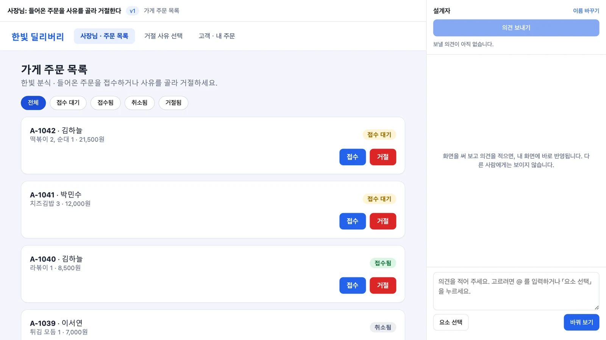
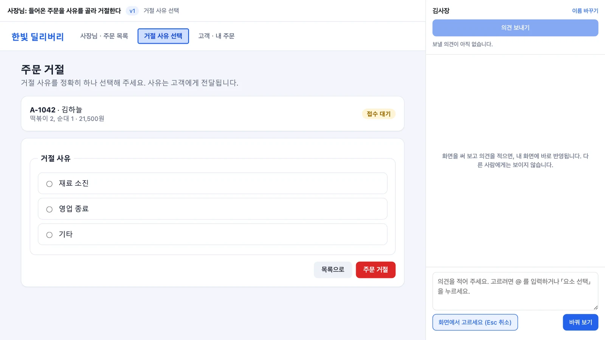
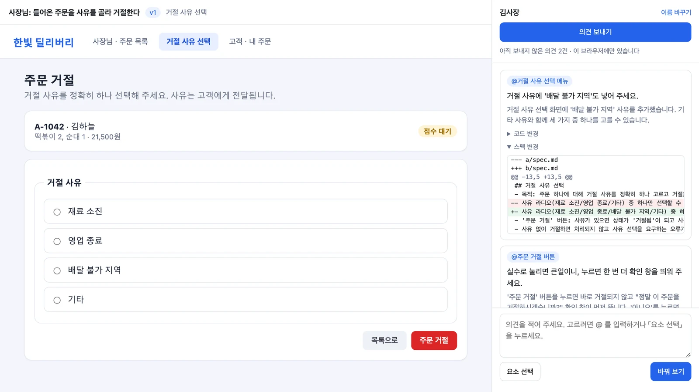
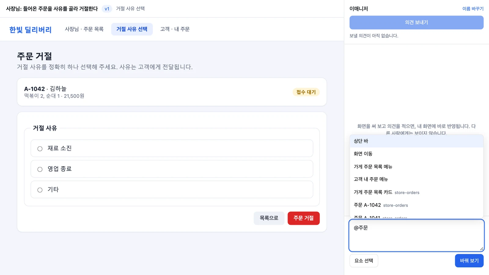
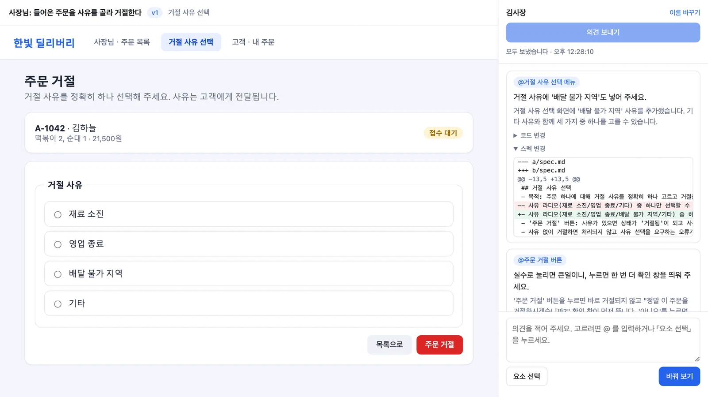
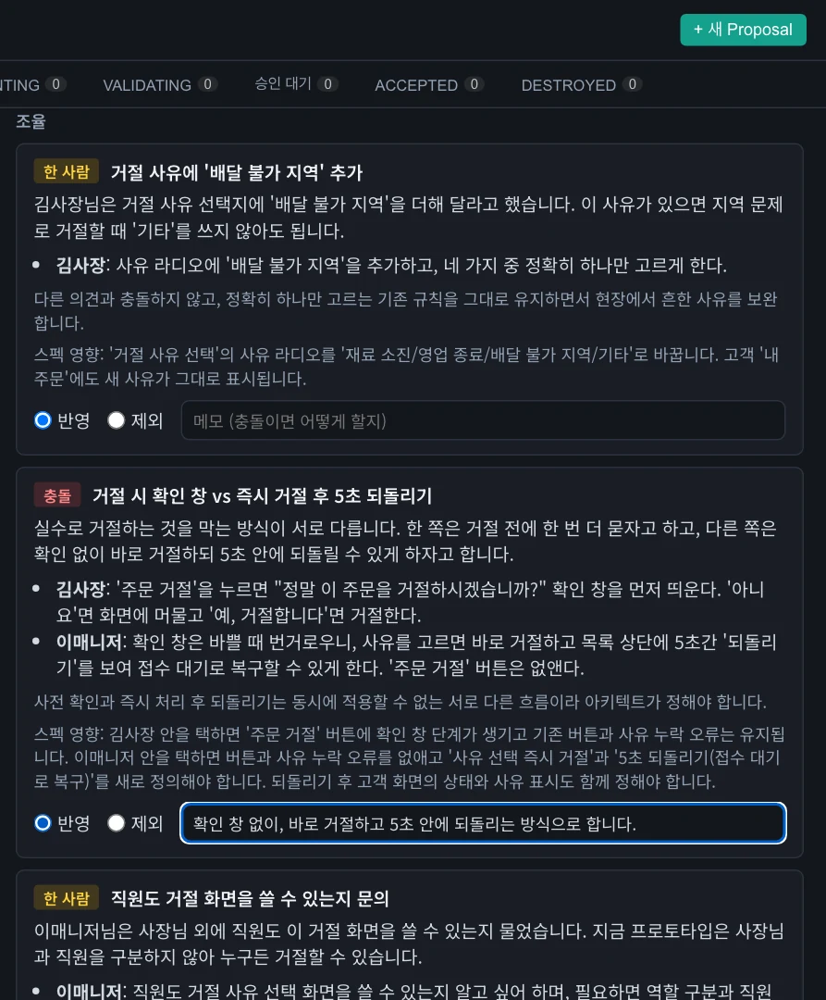
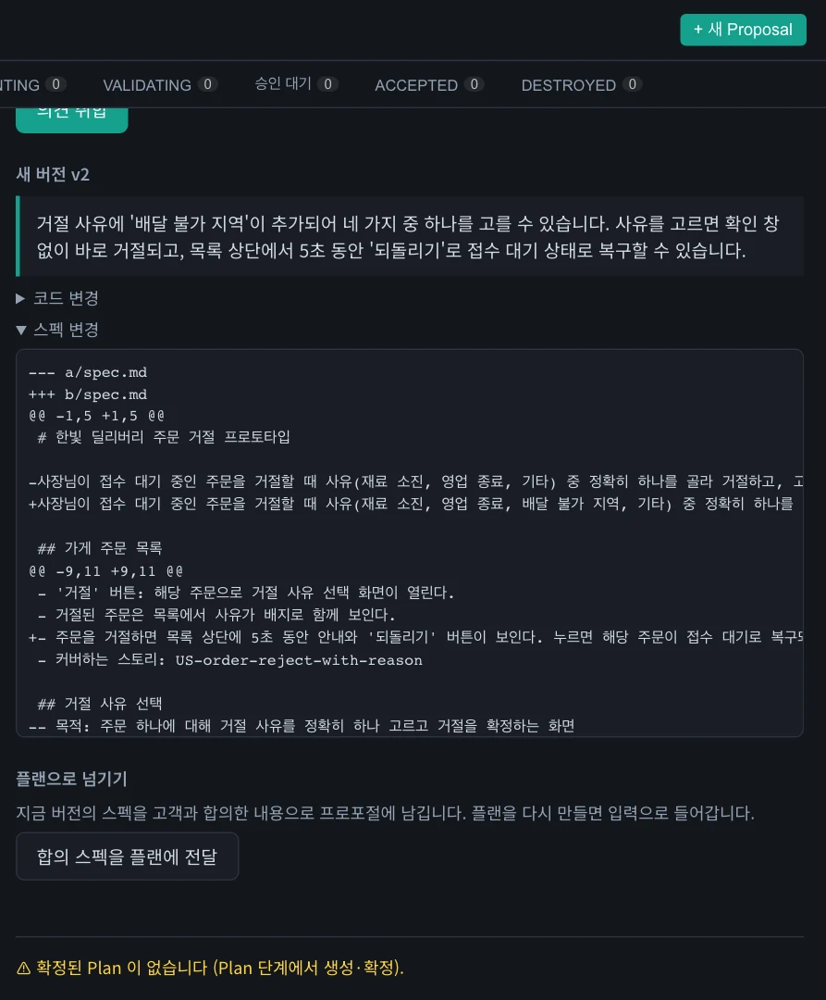
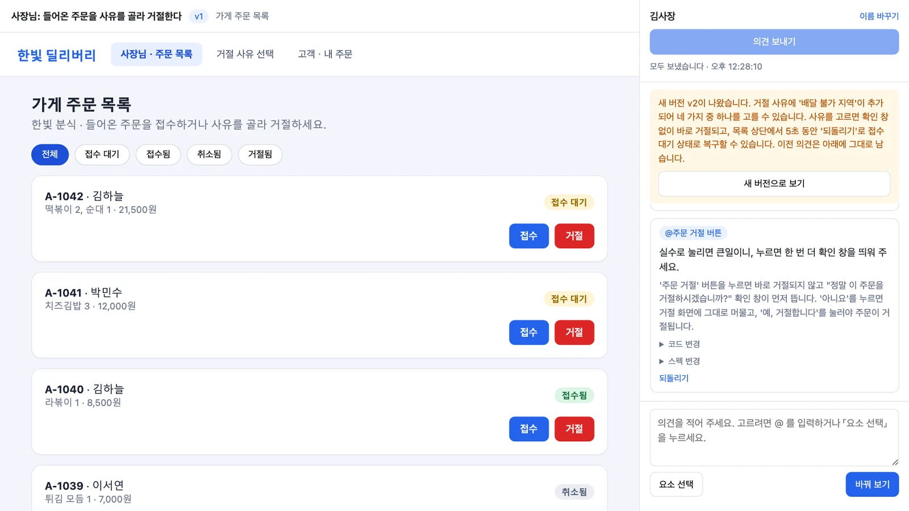
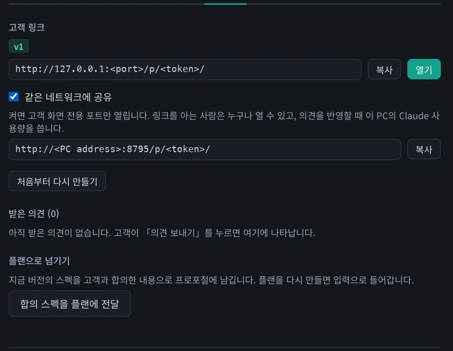

플랜을 고객이 직접 써 볼 수 있는 프로토타입으로 만들어 링크로 엽니다. 고객이 버튼이나 구획을 골라 의견을 남기면 그 사람의 화면만 바로 바뀌고, 의견과 변경 사항은 그 사람의 브라우저에 남습니다. 보내 온 의견을 모아 충돌을 조율하고 다음 버전과 다음 플랜에 반영합니다.
다음 설치본부터 포함됩니다
이 장의 기능은 설치본 0.1.1에는 없습니다. 지금은 소스 브랜치 feat/mvp-preview로 실행해야 합니다.
무엇을 하고 왜 하나#
스펙 문서만 보여 주면 고객은 「실제로 써 봐야 알겠다」고 말합니다. 구현한 뒤에 의견을 받으면 수정 비용이 큽니다. 플랜 단계에서 눌러 볼 수 있는 화면을 보여 주면 코드를 짜기 전에 의견을 모을 수 있습니다.
이 프로토타입은 미리 보기입니다. 데이터베이스나 서버 코드 없이 HTML 문서 하나로 동작하고, 예시 데이터는 메모리에만 있습니다. 그래서 고객의 의견이 곧바로 문서에 반영됩니다.
여러 고객의 의견을 한 화면에 바로 합치면 서로의 의견이 뒤섞입니다. 그래서 사람마다 자기 복사본을 고치고, 나중에 설계자가 합칩니다.
| 어디에 | 무엇이 |
|---|---|
| 고객의 브라우저 | 그 사람의 의견, 코드 diff, 스펙 diff, 바뀐 화면 |
| 앱 (파일) | 기준 버전(v1, v2 …), 고객이 「의견 보내기」로 보낸 묶음 |
| 그래프 DB | 없음. 합의 스펙을 플랜에 넘길 때만 프로포절에 기록 |
따라 하기 1 — MVP 만들기#
9장에서 만든 PRO-002(주문 거절)처럼 Plan이 있는 프로포절을 씁니다.
- 프로포절의 Plan 탭 아래쪽에서 MVP 만들기를 누릅니다.
- MVP 탭으로 이동하고, 고객 링크가 브라우저에 바로 열립니다. 이름을 입력하면 「만들고 있습니다」라는 안내가 보입니다. 이 실습에서는 40~50초 걸렸습니다.
- 완료되면 프로토타입이 자동으로 뜹니다. 왼쪽은 프로토타입, 오른쪽은 의견 칸입니다. 사장님 주문 목록에서 거절을 눌러 사유 화면으로 가 보세요. 실제로 동작합니다.


따라 하기 2 — 고객이 되어 의견 주기#
의견을 주는 방법은 두 가지입니다. 화면에서 고르거나 @로 고릅니다.
- 요소 선택을 누르고 거절 사유 목록을 누릅니다. 입력칸 위에
@멘션이 붙습니다. - 「거절 사유에 '배달 불가 지역'도 넣어 주세요.」라고 쓰고 바꿔 보기를 누릅니다.
- 내 화면에 항목이 생기고, 변경 사항의 요약이 보입니다. 이 실습에서는 4초 걸렸습니다. 동작을 크게 바꾸는 의견은 15~20초 걸렸습니다.
- 카드의 코드 변경과 스펙 변경을 펼치면 diff가 보입니다.


질문도 의견입니다
「이 화면은 직원도 쓸 수 있나요?」처럼 물으면 화면은 그대로이고 답만 옵니다. 이런 의견도 함께 보낼 수 있습니다.
따라 하기 3 — 다른 고객은 다른 화면을 본다#
- 다른 브라우저(또는 사생활 보호 창)로 같은 링크를 엽니다. 이름에
이매니저를 입력합니다. - 원래 화면이 보입니다. 앞사람이 바꾼 내용은 없습니다.
- 입력칸에
@주문까지 쓰면 요소 목록이 뜹니다. 하나를 고르고 앞사람과 반대되는 의견을 줍니다. 예를 들어 앞사람이 「확인 창을 띄워 주세요」라고 했다면, 「확인 창은 번거로우니 바로 거절되고 5초 안에 되돌릴 수 있게 해 주세요」라고 합니다. - 첫 번째 창을 새로 고쳐 보세요. 내 의견과 화면이 그대로 남아 있습니다. 최근 의견은 되돌리기로 취소할 수 있습니다.

따라 하기 4 — 의견 보내기#
고객이 의견 보내기를 누르기 전까지 의견은 그 사람의 브라우저에만 있습니다. 두 창에서 각각 누릅니다. 다시 보내면 그 사람의 묶음만 새것으로 바뀝니다.

따라 하기 5 — 모아서 조율하기#
- 앱의 MVP 탭으로 돌아옵니다. 받은 의견에 의견이 사람별로 나타납니다. 자세히를 누르면 의견과 diff가 보이고, 이 사람 화면을 누르면 그 고객이 만든 화면이 보입니다.
- 의견 취합을 누릅니다. 의견이 주제별로 묶입니다. 두 고객의 요구가 양립할 수 없는 주제는 충돌로 표시됩니다.
- 충돌은 사람이 조율합니다. 반영을 고르고 메모에 「확인 창 없이 바로 거절하고 5초 안에 되돌리는 방식으로 합니다.」라고 적습니다. 충돌이 아닌 주제는 추천대로 미리 선택되어 있습니다.
- N건 반영해 새 버전 만들기를 누릅니다. 새 기준 버전 v2와 코드·스펙 diff가 나옵니다.


취합 과정에서 어떤 의견도 사라지지 않습니다. 모델이 빠뜨린 의견은 별도 주제로 묶이고, 존재하지 않는 출처는 버려집니다. 새 버전의 문서와 안내문에는 고객 이름을 넣지 않습니다. 모든 고객이 보는 글이기 때문입니다.
따라 하기 6 — 고객에게 새 버전, 플랜에 합의 스펙#
- 고객 창을 새로 고치면 새 버전 안내가 뜹니다. 새 버전으로 보기를 눌러야 새 버전으로 바뀝니다. 이전 의견은 「v1 기준 의견」으로 남습니다.
- 앱에서 합의 스펙을 플랜에 전달을 누르고 플랜 다시 만들기를 누릅니다. 합의 스펙이 플랜의 입력으로 들어갑니다. 이 실습에서 다시 만든 플랜에는 배달 불가 지역과 5초 되돌리기가 포함되어 있었습니다.

공유 범위와 안전#
기본 링크는 이 PC에서만 열립니다. 같은 네트워크에 공유를 켜면 고객 화면 전용 포트가 열립니다. 그 주소를 고객에게 줍니다. 앱의 나머지 API는 그 포트로 열리지 않습니다. 외부 네트워크의 고객에게 인터넷으로 공유하려면 터널이나 배포가 따로 필요합니다.

| 위험 | 막는 방법 |
|---|---|
| 고객의 글이 내 PC 의 모델로 들어온다 | 도구·MCP·개인 지침 없이 빈 폴더에서 호출. 사내 모델이면 도구를 넘기지 않음 |
| 프로토타입 코드는 믿을 수 없다 | 격리된 frame + 외부 통신 금지. 부모 페이지·저장소·네트워크에 닿지 않음 |
| 내 계정 정보가 화면에 실린다 | 결과에서 계정 이메일·조직 이름·홈 경로를 지움 |
| 링크를 받은 사람이 무한정 부른다 | 사람별 분당 6회, 링크별 하루 300회, 동시 호출 2개 |
남는 위험
링크를 아는 사람은 누구나 열 수 있고, 의견을 반영할 때 이 PC의 모델 사용량이 소모됩니다. 로그인된 Claude Code는 계정 이메일을 모델에 넘기며, 이를 플래그로 끌 수 없습니다. 결과에서 지우지만 글자를 나누거나 인코딩해 출력하면 막지 못합니다. 민감한 환경에서는 공유를 켜지 마세요.
사내 · 로컬 모델로 쓰기#
Claude Code 없이도 프로포절 스킬과 이 기능을 쓸 수 있습니다. 설정 › AI 모델에서 OpenAI 호환 모델을 고르고 주소, API 키, 모델 이름을 입력합니다. 연결 시험을 누르면 세 가지를 실제로 호출해 봅니다.
| 시험 항목 | 쓰이는 곳 |
|---|---|
| 답하기 | 이 장의 MVP, AI 기능 |
| 도구 호출 | 프로포절 스킬. 못 내는 모델은 없는 파일을 지어낼 수 있어 쓰면 안 됩니다 |
| Anthropic 형식 | 코드 셀. 켜면 코드 셀과 나머지 Claude Code 호출도 게이트웨이로 갑니다 |
추론 수준은 「낮음」을 권합니다. 추론이 긴 모델은 추론에 토큰을 다 써서 본문이 비거나 시간이 아주 오래 걸립니다. 아래는 회사 게이트웨이 모델로 측정한 값입니다. 프로포절이 달라 직접 비교할 수는 없습니다.
| 단계 | 추론 설정 없음 | 낮음 |
|---|---|---|
| Intent | 39초 | 29초 |
| Plan | 1131초 | 83초 |
| 작업 목록 | 349초 | 25초 |
확인 문제#
- 고객 A가 바꾼 화면을 고객 B가 볼 수 있나요? 왜 그렇게 만들었나요?
- 고객이 의견을 남겼지만 「의견 보내기」를 누르지 않았습니다. 설계자가 그 의견을 볼 수 있나요?
- 충돌로 표시된 주제는 왜 자동으로 반영되지 않나요?
- 프로토타입 코드가 외부 서버로 데이터를 보내려 하면 어떻게 되나요?
정답
- 볼 수 없습니다. 각자 자기 복사본을 고칩니다. 한 화면에 바로 합치면 서로의 의견이 뒤섞이고, 누구의 의견이 무엇을 바꿨는지 알 수 없습니다.
- 볼 수 없습니다. 보내기 전까지 의견은 그 사람의 브라우저에만 있습니다.
- 양립할 수 없는 요구를 조율하는 일은 제품의 방향을 결정하는 일이므로 사람이 정해야 합니다. 어떻게 할지 메모로 적을 수 있습니다.
- 막힙니다. 프로토타입은 외부 통신이 금지된 격리 frame 안에서만 동작합니다.